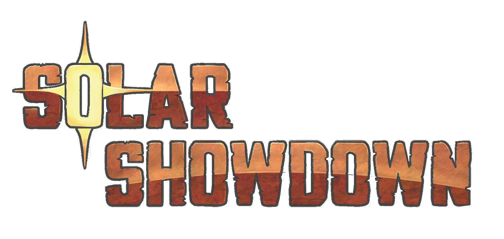

During my time at Brigham Young University, I worked as a research assistant on a variety of technical animation and rigging projects, many recognized at the national level. I served as a lead rigger and technical animator on two short films and a student game, including The Witch’s Cat (Emmy 2024), CENOTE (Emmy 2023), and Solar Showdown. My responsibilities included facial and body rigging, animation support, and leading rigging teams—strengthening both my leadership and technical skills.
I developed tools and systems from the ground up using Python and PyQt, including a custom auto-rigger that generated IK/FK controls, limb systems, and UI interfaces. This automated much of the rigging process, improving workflow efficiency. For our Senior Game Capstone, I created a game-ready character rig and pipeline integration system for Unreal Engine, building a Maya-to-Unreal skeleton translation solution to overcome animation import limitations. These experiences shaped how I approach problems, balancing artistic needs with performance, workflow efficiency, and cross-discipline collaboration.

Solar Showdown is a 2-player couch-competitive game where players harvest solar power, build defenses, and produce minions to attack their opponent's towers. I had the privilege of working on all the prop rigs, the Botanist character rig, and providing some animation support.
Jealousy strikes a witch’s cat when the witch’s boyfriend proposes, prompting the cat to take drastic action in this heartwarming tale of love, acceptance, and forgiveness.
Created by the BYU Animation Class of 2023. This film won an Emmy at the 2023 College Television Awards and I had the privilege of being the lead rigger on this project. I was responsible for the facial rigging, body rigging, rig tool support, and some animation support.
When Axel, a young axolotl, is separated from his family by ancient magic, it's up to him and Memo, an unlikely human ally, to escape the cenote he’s trapped in and find his way back home. This short animated student film marks the 20th student Emmy awarded to BYU's Center for Animation. I had the privilege to work on this film as a rigger. I was responsible for the body rigging in this film.